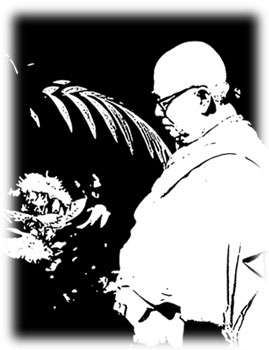
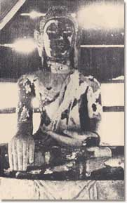

กำเนิดสวนโมกข์
สวนป่าอันเป็นกำลังแห่งการหลุดพ้น
เราเดินตามโลกตั้งแต่นาทีที่เกิดมา
จนถึงนาทีที่มีความรู้สึกนี้
ต่อนี้ไป เราจะไม่เดินตามโลก
และลาโลกไปค้นหาสิ่งที่บริสุทธิ์
ตามรอยพระอริยะที่ค้นแล้วจนพบ...
อาจารย์ครับ ชื่อสวนโมกข์นี่ได้มาอย่างไรครับ
(หัวเราะ) มันก็เป็นธรรมดาแหละ ที่จะต้องตั้งชื่อ แต่ว่าเรื่องชื่อสวนโมกข์นี่ นายธรรมทาสเขาไม่ได้เกี่ยวข้อง หรือไม่มีสิทธิ์ที่จะเกี่ยวข้อง ว่าจะตั้งชื่ออะไร เราว่าไปคนเดียว คิด คิด คิดไปตามไอ้หลักเกณฑ์ หรือตามถ้อยคำที่มีใช้อยู่ และเพื่อขบขันบ้าง เรามันมีนิสัยฮิวเมอริสท์อยู่บ้าง ฟลุคที่ว่ามันมีต้นโมกและต้นพลาที่สวนโมกข์เก่านั่น ต้นโมกนี่ยังอยู่ที่หน้าโบสถ์หลายต้น และต้นพลาก็มีอยู่ทั่วๆ ไป ต้นโมกกับต้นพลา เอาโมกกับพลามาต่อกันเข้า (หัวเราะ) มันก็ได้ความเต็มว่า กำลังแห่งความหลุดพ้น พลังแห่งความหลุดพ้น ส่วนคำว่าอารามย่อมธรรมดา แปลว่าที่ร่มรื่น ที่รื่นรมย์ เมื่อมันฟลุคอย่างนี้มันก็ออกมาจริงจัง ตรงกับความหมายแท้จริงของธรรมะ วัตถุประสงค์ก็คือโมกข์ สถานที่อันเป็นพลังเพื่อโมกขะ ก็เหมาะแล้ว เมื่อแรกเสนอขึ้นมาเขาฟังขัดหูกันทั้งนั้นแหละ แปลก หรือว่าขัดๆ หูไม่รู้อะไร โมกข-พลา ต้องอธิบายให้รู้ว่าธรรมะคืออย่างนั้น มีความหลุดพ้นเป็นวัตถุที่พึงประสงค์ จึงเกิดวันชนิดที่ช่วยส่งเสริมให้เกิดความหลุดพ้น เรียกว่า โมกขพลาราม
จาก
เล่าไว้เมื่อวัยสนธยา อัตชีวประวัติของท่านพุทธทาส
พระประชา ปสนฺนธมฺโม สัมภาษณ์ น.๑๕๖-๑๕๗
.... .... .... ....
| เ |
มื่อพระมหาเงื่อมตัดสินใจแน่วแน่แล้วที่จะกลับบ้าน ก็ได้มีจดหมายถึงนายยี่เกยผู้น้องชาย ความตอนหนึ่งว่า
"เราตกลงใจกันแน่นอนแล้วว่า กรุงเทพฯ ไม่ใช่เป็นที่ที่จะค้นพบความบริสุทธิ์ การถลำเข้าเรียนปริยัติธรรมทางเจือด้วยยศศักดิ์ เป็นผลดีให้เรารู้สึกตัวว่า เป็นการก้าวผิดไปก้าวหนึ่ง หากรู้ไม่ทันก็จะต้องก้าวไปอีกหลายก้าว และยากที่จะถอนออกได้เหมือนบางคน จากการรู้สึกว่าก้าวผิดนั่นเอง ทำให้พบเงื่อนว่า ทำอย่างไรเราจะก้าวถูกด้วย
เราเดินตามโลกตั้งแต่นาทีที่เกิดมา จนถึงนาทีที่มีความรู้สึกนี้ ต่อนี้ไป เราจะไม่เดินตามโลก และลาโลกไปค้นหาสิ่งที่บริสุทธิ์ ตามรอยพระอริยะที่ค้นแล้วจนพบ..." และ
"ฉันมืดแปดด้าน ไม่รู้ว่าจะไปขออาศัยสถานที่ที่ไหน เพื่อการศึกษาของเราจึงจะเหมาะนอกจากบ้านเราเอง และไม่มีที่ไหนนอกจากบ้านเรา คือที่พุมเรียง ก่อนที่อื่น จึงจำเป็นต้องขอความช่วยเหลือรบกวนในบางอย่าง คือต้องมีผู้ช่วยให้ได้โอกาสเรียนมากที่สุด และใครๆ จงถือเสียว่า ฉันไม่ได้กลับออกมาพักอยู่ที่พุมเรียงเลย การกินอยู่ขอรบกวนให้มีการเปลี่ยนแปลงไปจากเดิมสักเล็กน้อย คือถ้าไม่อยากทำอย่างอื่น ข้าวที่ใส่บาตรจะคลุกน้ำปลาเสียสักนิดก็จะดี ลูกศิษย์ของพระพุทธเจ้าจะไม่รบกวนอย่างอื่นอีกเลย ฉันจะเป็นผู้พิสูจน์ให้เพื่อนกันเห็นว่า พระอรหันต์แทบทั้งหมด มีชีวิตอยู่ด้วยข้าวสุกที่หุงด้วยปลายข้าวสารหัก และราดน้ำส้มหรือน้ำผักดองนิดหน่อยเท่านั้น เราลองกินข้าวสุกของข้าวสารที่เป็นตัว และน้ำปลา ก็ยังดีกว่าน้ำส้ม และเราลองกินอยู่เดี๋ยวนี้ รู้สึกว่าไม่มีการขัดข้องเลย ที่จะกินต่อไป.."
แล้วในวันที่ ๖ เมษายน ๒๔๗๕ พระมหาเงื่อมก็เดินทางกลับถึงบ้านเกิดที่พุมเรียง และเข้าพักชั่วคราวในโบสถ์วัดใหม่พุมเรียง การกลับมาครั้งนี้ มีเพียงโยมน้องชายและเพื่อนในคณะธรรมานประมาณ ๔๕ คนเท่านั้น ที่ร่วมรับรู้ถึงปณิธานอันมุ่งมั่นของพระมหาเงื่อม ทุกคนเต็มอกเต็มใจที่จะหนุนช่วยด้วยความศรัทธา โดยพากันออกเสาะหาสถานที่ ซึ่งคิดว่ามีความวิเวกและเหมาะสมจะเป็นสถานที่ เพื่อการทดลองปฏิบัติธรรมตามรอยพระอรหันต์ สำรวจกันอยู่ประมาณเดือนเศษ ก็พบวัดร้างเนื้อที่ประมาณ ๖๐ ไร่ ชื่อ ตระพังจิก ซึ่งรกร้างมานาน บริเวณเป็นป่ารกครื้ม มีสระน้ำใหญ่ซึ่งร่ำลือกันว่า มีผีดุอาศัยอยู่ เมื่อเป็นที่พอใจแล้ว คณะอุบาสกดังกล่าวก็จัดทำเพิงที่พัก อยู่หลังพระพุทธรูปเก่าซึ่งเป็นพระประธานในวัดร้างนั้น แล้วพระมหาเงื่อมก็เข้าอยู่ในวัดร้างตระพังจิก เมื่อวันที่ ๑๒ พฤษภาคม ๒๔๗๕ อันตรงกับวันวิสาขบูชา โดยมีเพียงอัฐบริขาร ตะเกียง และหนังสืออีกเพียง ๒๓ เล่มติดตัวไปเท่านั้น
เข้าไปอยู่ได้ไม่กี่วัน วัดร้างนามตระพังจิกนี้ ก็ได้รับการตั้งนามขึ้นใหม่โดยพระมหาเงื่อม ซึ่งเห็นว่า บริเวณใกล้ที่พักนั้น มีต้นโมกและต้นพลาขึ้นอยู่โดยทั่วไป จึงคิดนำคำทั้งสองมาต่อเติมขึ้นใหม่ ให้มีความหมายในทางธรรม จึงเกิดคำว่า "สวนโมกขพลาราม" อันหมายถึง "สวนป่าอันเป็นกำลังแห่งความหลุดพ้นจากทุกข์" ขึ้นในโลกตั้งแต่บัดนั้นเป็นต้นมา พร้อมๆ กับการเริ่มภารกิจตามที่ใจมุ่งมั่น โดยเริ่มการขบคิดเรื่องต่างๆ และลงมือค้นคว้าพระไตรปิฎกต่ออีกด้วยตนเอง เมื่อถึงเดือนสิงหาคม ๒๔๗๕ ก็เริ่มถ่ายทอดอุดมคติอันตนศรัทธาเชื่อมั่น ออกเป็นงานเขียนเรื่อง "ตามรอยพระอรหันต์" หัวใจของพระมหาหนุ่มในเวลานั้น เต็มเปี่ยมด้วยรู้สึกที่จะมอบกายถวายชีวิตให้กับงานของพระศาสดา จึงตั้งนามตนเองขึ้นใหม่ว่า "พุทธทาส" ตามบทสวดตอนหนึ่งในภาษาบาลี นาม"พุทธทาส" จึงเริ่มเป็นที่รู้จักกันเรื่อยมาจนบัดนี้
ความมุ่งมั่นตั้งใจของพระลูกชายและคณะธรรมทาน ที่จะส่งเสริมการปฏิบัติธรรมในด้านวิปัสสนาธุระให้รุ่งเรือง ทำให้นางเคลื่อนผู้มารดา ได้ทำพินัยกรรม มอบเงินจำนวน ๖,๓๗๘ บาท ตั้งเป็นทุนต้นตระกูลพานิช เพื่อให้นำดอกผลมาใช้ในกิจการของสวนโมกข์และคณะธรรมทาน ซึ่งได้เปิด "ห้องธรรมทาน" ขึ้นใกล้ทางรถไฟ จัดให้มีการทำบุญเลี้ยงพระในวันอุโบสถ และนิมนต์ "พุทธทาสภิกขุ" มาแสดงพระธรรมเทศนา นอกจากนี้
กองทุนดังกล่าวยังช่วยให้เกิดหนังสือพิมพ์ราย ๓ เดือน ชื่อ "พุทธสาสนา" ในเดือน พฤษภาคม ๒๔๗๖ ซึ่งถือเป็นสื่อสำคัญที่สุดที่ช่วยเผยแพร่ให้สาธารณชนได้รับทราบว่า บัดนี้ที่เมืองไชยา ซึ่งสมัยหนึ่งเคยเป็นที่ตั้งเดิมของอาณาจักรศรีวิชัย อันรุ่งเรืองด้วยพุทธศาสนาในอดีต ได้เกิดคณะบุคคล ซึ่งประกอบด้วยพระและฆราวาส ที่พร้อมใจกันจะพิสูจน์ให้โลกสมัยใหม่ตระหนักว่า พระพุทธศาสนาคือปัจจัยสำคัญอย่างยิ่งยวดของการดำรงชีวิตอยู่ในโลกนี้ และแก่นแท้แห่งพระพุทธศาสนามิใช่พิธีกรรม ไสยศาสตร์ หรือการเรียนปริยัติธรรม เพื่อสอบเอาเปรียญธรรมสูงๆ หากแต่เป็นการศึกษาควบคู่ไปพร้อมๆ กับการปฏิบัติ และผู้ที่ปฏิบัติได้ถูกต้อง ก็จะสามารถก้าวไปสู่ทางแห่งพระนิพพานได้ตามลำดับอย่างแน่นอนด้วย
 พระมหาเงื่อมได้เริ่มงานเผยแพร่ความคิดนี้ไปพร้อมๆ กับการศึกษาพระไตรปิฎก แล้วนำมาปฏิบัติทดลอง มีชีวิต ตามแบบสงฆ์ ในสมัยพุทธกาลด้วยตนเอง คือดำรงชีวิตอยู่ในสวนโมกข์อย่างสมถะ และใกล้ชิดกับธรรมชาติมากที่สุด ศึกษาและทดลองฝึกกรรมฐาน และวัตรปฏิบัติต่างๆ อย่างเอาจริงเอาจัง แล้วจดบันทึกไว้เป็นข้อมูล เพื่อศึกษาว่าพระพุทธองค์ทรงสอนอะไร และให้ผลอย่างไร ในช่วงเข้าพรรษา จะเป็นช่วงเวลาของการฝึกฝนตนเองอย่างเข้มข้นพิเศษ โดยท่านได้จัดทำสมุดบันทึก "ปฏิบัติธรรมรายวัน แบบพุทธทาส" ขึ้น เพื่อศึกษาไตร่ตรองและทบทวนผลจากการทดลองปฏิบัติ จากบันทึกในช่วงเข้าพรรษาประจำปี ๒๔๗๗ แสดงให้เห็นว่า การศึกษาทดลองของท่านนั้น เป็นไปอย่างชนิดต้องอาศัยความทรหดและจิตใจอันเข้มแข็งเป็นอย่างยิ่ง ดังเช่นเมื่อตั้งใจไว้ว่าจะต่อสู้กับกิเลสต่างๆ ที่มารบกวนล่อหลอกให้หลงตาม ท่านก็จะบังคับใจตนเองให้ทำตรงกันข้าม ดังที่มีบันทึกไว้ว่า "หากสับเพร่าทำยุงตาย หรือบอบช้ำไปหนึ่งตัว จะให้ยุงกัดคราวหนึ่งไม่ต่ำกว่า ๒๐๐ ตัว และไม่ต่ำกว่า ๒๐ นาทีในป่ารก หรือ
ถ้าขี้เกียจ จะรบมันด้วยการนั่งให้สว่างคาที่
ถ้าหิว รบมันด้วยการกวาดลานให้มาก จนไม่หิว
ถ้าเพลียโหย จงเดินจงกรมอย่างแรง ๔-๕ ร้อยเที่ยว
ถ้าขลาดมาท่าไหน จะอยู่ในท่านั้นให้หนักขึ้น จนกว่าจะไม่ขลาด
ถ้ารักชอบ เทหรือทุบต่อยสิ่งนั้นทันที หรือเพ่งให้เห็นความเลวของมัน
ถ้าอร่อย จะเจือน้ำหรือทิ้งส่วนนั้นเสีย
ถ้าไม่อร่อย จงกินจนรู้สึกว่าเฉย หรืออร่อยโดยสันโดษ
ถ้าเพลินในอารมณ์ จงคิดจนเห็นอนัตตา มิฉะนั้นอย่าลุก"
ในบางช่วงแห่งการทดลองนี้ ท่านจะงดการพูดโดยเด็ดขาดเป็นเวลา ๓ เดือน หรือฉันแต่อาหารธรรมชาติตลอดพรรษา เช่น กล้วยน้ำว้า ข้าวโพด มะพร้าว แตง ฯลฯ และเคยแม้กระทั่งทำการทดลองแปลกๆ ในบางครั้ง ซึ่งทำให้ท่านได้พบข้อคิดใหม่ๆ เช่น เมื่อทดลองสละเลือดให้ยุงกินพร้อมกันคราวเดียว ๑๐๐ ตัวเศษ ในป่ารก ท่านได้บันทึกไว้ว่า ผลทางจิตใจคือ "ได้หลักในใจแปลกๆ ว่า ปีติเกิดได้ทุกอย่างในการเสียสละเพื่อสัตว์อื่นๆ"
การศึกษาค้นคว้าพระไตรปิฎก และการทดลองปฏิบัติอย่างแน่วแน่เช่นนี้ ได้ก่อให้เกิดปัญญาที่จะรู้แจ้งในพระธรรมคำสอนมากขึ้นๆ เป็นลำดับ กระทั่งแยกแยะได้ถูกว่า พระพุทธเจ้าทรงสอนอะไรและหัวใจของคำสอนคืออะไร ฯลฯ แล้ววันหนึ่งแห่งการตามรอยพระอรหันต์ ท่านก็บันทึกการตัดสินใจอันสำคัญไว้ว่า
"รู้สึกว่าต่อไปจะเปลี่ยนเข็มมุ่งหมายในใจบางอย่าง ให้หมุนตรงเฉพาะต่อความสุขอย่างแท้จริง คือ ละวางทุกๆ อย่างแล้วมีใจสดชื่นเย็นฉ่ำยิ่งขึ้นเสมอ จะประกาศแต่ความสุขนี้เท่านั้น จะไม่ยอมให้อะไรครอบงำใจได้อีกต่อไป ชีวิตของข้าพเจ้าสละทุกอย่างๆ มุ่งหมายต่อความสุขนี้ และประกาศเผยแผ่ความสุขนี้เท่านั้น ไม่มีอะไรดีไปกว่านี้ในบรรดามีอยู่ในพุทธศาสนา"
เวลา ๑๕.๐๐ น. ถึงที่สุดแห่งความตกลงใจ (บันทึกเมื่อ ๒๐ กันยายน ๒๔๗๗)
ความคิดและผลอันเกิดจากการศึกษาทดลองของพระมหาเงื่อมนี้ ได้รับการเผยแผ่ผ่านทางหนังสือพิมพ์ "พุทธสาสนา" อยู่อย่างต่อเนื่อง ส่งผลให้ผู้คนจำนวนไม่น้อย เริ่มสนใจกับหลักธรรมต่างๆ ซึ่งไม่เคยมีใครพูดมาก่อน และปรารถนาที่จะให้ความสนับสนุน ก่อนเข้าพรรษาปี ๒๔๗๗ พระดุลยพากย์สุวมัณฑ์ ได้นิมนต์ "พระพุทธทาส ภิกขุ" เดินทางไปแสดงธรรม ณ นครศรีธรรมราช ในโอกาสเปิดสวนปันตาราม ซึ่งจัดตั้งขึ้นตามแนวของสวนโมกข์ และในปี ๒๔๘๐ เหตุการณ์ซึ่งคณะผู้ก่อตั้งสวนโมกข์ไม่ได้คาดฝันก็บังเกิดขึ้น สมเด็จพระพุทธโฆษาจารย์ (เจริญ ญาณวรเถระ) วัดเทพศิรินทร์ องค์ประธานกรรมการ มหาเถรสมาคม เดินทางมาเยี่ยมและพักแรมที่สวนโมกข์ ๑ คืน แล้วในปีถัดมา พระยาลัดพลีธรรมประคัลภ์ (วงศ์ ลัดพลี) พระยาภรตราชสุพิช นายสัญญา ธรรมศักดิ์ เดินทางมาเยี่ยมสวนโมกข์ บุคคลชั้นนำทั้งบรรพชิตและฆราวาสเหล่านี้ ได้เป็นกัลยาณมิตรที่สำคัญยิ่งของสวนโมกข์ในเวลาต่อมา ช่วยส่งเสริมให้กิจการเพื่อการตามรอยพระอรหันต์แผ่ขยายจากสำนักปฏิบัติธรรมเล็กๆ ในหัวเมือง ไปสู่สาธารณชนทุกทิศทุกทางในเวลาต่อมา ....
จาก
อนุทินภาพ ๖๐ ปี สวนโมกข์
อรศรี งามวิทยาพงศ์ บรรณาธิการ หน้า ๔๐-๔๓